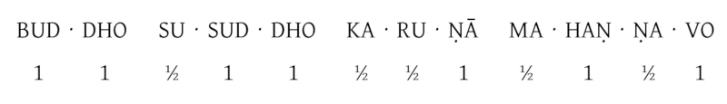

Pāli Phonetics and Pronunciation
Pāli is the original scriptural language of Theravāda Buddhism. It was a spoken language, closely related to Sanskrit, with no written script of its own. As written forms have emerged, they have been in the letterings of other languages (e.g. Devanagari, Sinhalese, Burmese, Khmer, Thai, Roman). The Roman lettering used here is pronounced as in English, with the following clarifications:
Vowels
| Short | Long |
|---|---|
| a as in about | ā as in father |
| i as in hit | ī as in machine |
| u as in put | ū as in rule |
| e as in grey | |
| o as in more |
Exceptions: e and o change to short sounds in syllables ending in consonants. They are then pronounced as in ‘get’ and ‘ox’, respectively.
Consonants
c as in ancient (like ch but unaspirated)
ṃ, ṅ as ng in sang
ñ as ny in canyon
v rather softer than the English v; near w
Aspirated consonants
bh ch dh ḍh gh jh kh ph th ṭh
These two-lettered notations with h denote an aspirated, airy sound, distinct from the hard, crisp sound of the single consonant. They should be considered as one unit.
However, the other combinations with h, i.e., lh, mh, ñh, and vh, do count as two consonants (for example in the Pāli words ‘jivhā’ or ‘muḷho’).
Examples
th as t in tongue. (Never pronounced as in ‘the’.)
ph as p in palate. (Never pronounced as in ‘photo’.)
These are distinct from the hard, crisp sound of the single consonant, e.g. th as in ‘Thomas’ (not as in ‘thin’) or ph as in ‘puff’ (not as in ‘phone’).
Retroflex consonants
ḍ ḍh ḷ ṇ ṭ ṭh
These retroflex consonants have no English equivalents. They are sounded by curling the tip of the tongue back against the palate.
Chanting technique
Once you have grasped the system of Pāli pronunciation and the following chanting technique, it allows you to chant a text in Pāli from sight with the correct rhythm.
Unstressed syllables end in a short a, i or u. All other syllables are stressed. Stressed syllables take twice the time of unstressed syllables – rather like two beats in a bar of music compared to one. This is what gives the chanting its particular rhythm.

Two details that are important when separating the syllables:
1. Syllables with double letters get divided in this way:

They are always enunciated separately, e.g. dd in ‘uddeso’ as in ‘mad dog’, or gg in ‘maggo’ as in ‘big gun’.
2. Aspirated consonants like bh, dh etc. count as single consonant and don’t get divided (Therefore am·hā·kaṃ, but sa·dham·maṃ, not sad·ham·maṃ or, another example: Bud·dho and not Bu·ddho).
Precise pronunciation and correct separation of the syllables is especially important when someone is interested in learning Pāli and to understand and memorize the meaning of Suttas and other chants, otherwise the meaning of it will get distorted.
An example to illustrate this:
The Pāli word ‘sukka’ means ‘bright’; ‘sukkha’ means ‘dry’; ‘sukha’ – ‘happiness’; ‘suka’ – ‘parrot’ and ‘sūka’ – ‘bristles on an ear of barley’.
So if you chant ‘sukha’ with a ‘k’ instead of a ‘kh’, you would chant ‘parrot’ instead of ‘happiness’.
A general rule of thumb for understanding the practice of chanting is to listen carefully to what the leader and the group are chanting and to follow, keeping the same pitch, tempo and speed. All voices should blend together as one.